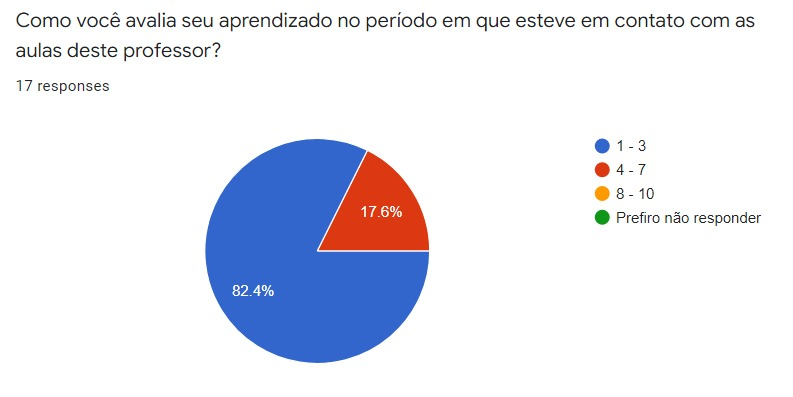

Últimas notícias de Araxá-MG para você:
CEFET-MG: Professor se aposenta após reclamações de alunos
Por Vitória Cristina e Renato Justino, Araxá-MG, 24/06/2022

Cefet-MG/Araxá - Imagem: Equipe Cefet Araxá.
O professor responsável por ministrar as aulas de matemática das turmas do segundo ano da unidade CEFET-MG Araxá anunciou sua aposentadoria após os alunos reclamarem da sua metodologia de ensino para a equipe de pedagogia do campus.
No dia 01/06, os alunos foram informados da saída do professor e, imediatamente, os membros administrativos da unidade providenciaram a entrada de um professor provisório para ministrar as aulas de matemática e para que os alunos não sejam prejudicados na caminhada do ano letivo.
Diante dos fatos, a equipe jornalística realizou uma pesquisa opinativa anônima com os alunos do CEFET-MG Araxá para sabermos a opinião geral em relação à aposentadoria do professor. Veja abaixo:

O gráfico acima avalia o nível de aprendizado obtido pelos alunos em uma escala de 1 a 10.
• 82.4% das respostas declaram que o aprendizado dos alunos estava entre 1 a 3.
O gráfico acima avalia as notas obtidas pelos alunos durante o período de docência do professor.
• 61,5% das respostas declaram que as notas estavam entre 30% a 60% da nota total do bimestre durante este período.
Alguns alunos do campus, anonimamente, demonstraram sua opinião geral sobre a situação em nosso formulário. Veja algumas declarações:
“- Achei uma boa decisão, suas aulas não estavam sendo eficientes.”
“- As aulas de fato possuíam pouco ou nenhum aproveitamento da classe. Com a saída do professor, espero que a situação melhore.”
Os gráficos indicam uma relação entre a forma que as aulas foram ministradas e as notas dos alunos, sem mencionar o formulário de opinião geral. Observa-se que ambos mostram uma evidente insatisfação do corpo discente da unidade.
De forma geral, o retorno dos alunos sobre a troca de professores foi positiva, já que os mesmos se mostraram incomodados com a metodologia antes aplicada, resultando em complicações no aprendizado dos alunos.
Ocorreu um erro novamente.
Não foi possível carregar mais notícias!
Motivo: era pra fazer apenas uma notícia.